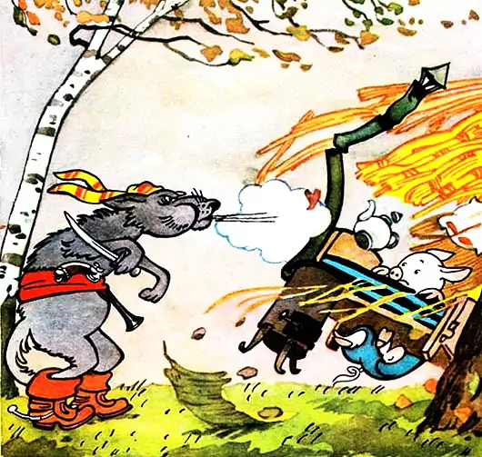
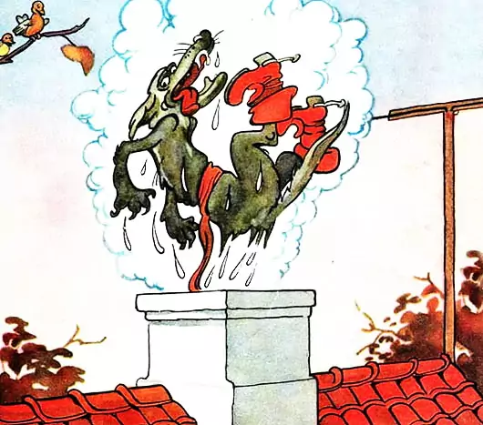
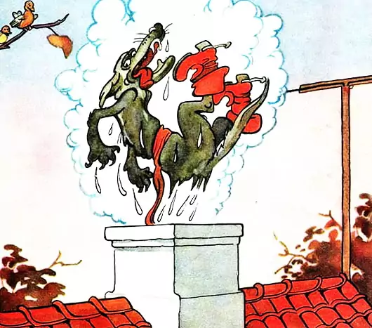

Жили-были на свете три поросенка. Три брата. Все одинакового роста, кругленькие, розовые, с одинаковыми веселыми хвостиками. Даже имена у них были похожи. Звали поросят: Ниф-Ниф, Нуф-Нуф и Наф-Наф.
Все лето поросята кувыркались в зеленой траве, грелись на солнышке, нежились в лужах. Но вот наступила осень.
— Пора нам подумать о зиме, — сказал как-то Наф-Наф своим братьям, проснувшись рано утром. — Я весь дрожу от холода. Давайте построим дом и будем зимовать вместе под одной теплой крышей.
Но его братья не хотели браться за работу.
— Успеется! До зимы еще далеко. Мы еще погуляем, — сказал Ниф-Ниф и перекувырнулся через голову.
— Когда нужно будет, я сам построю себе дом, — сказал Нуф-Нуф и лег в лужу.
— Я тоже, — добавил Ниф-Ниф.
— Ну, как хотите. Тогда я буду один строить себе дом, — сказал Наф-Наф.
Ниф-Ниф и Нуф-Нуф не торопились. Они только и делали, что играли в свои поросячьи игры, прыгали и кувыркались.
— Сегодня мы еще погуляем, — говорили они, — а завтра с утра возьмемся за дело.
Но и на следующий день они говорили то же самое.
Ниф-Ниф решил, что проще и скорее всего смастерить дом из соломы. Ни с кем не посоветовавшись, он так и сделал. Уже к вечеру его хижина была готова. Ниф-Ниф положил на крышу последнюю соломинку и, очень довольный своим домиком, весело запел:
Хоть полсвета обойдешь, Обойдешь, обойдешь, Лучше дома не найдешь, Не найдешь, не найдешь!Нуф-Нуф с гордостью обошел его несколько раз кругом и запел:
У меня хороший дом, Новый дом, прочный дом, Мне не страшен дождь и гром, Дождь и гром, дождь и гром!
Не успел он закончить песенку, как из-за куста выбежал Ниф-Ниф.
— Ну, вот и твой дом готов! — сказал Ниф-Ниф брату. — Я говорил, что мы быстро справимся с этим делом! Теперь мы свободны и можем делать все, что нам вздумается! — Пойдем к Наф-Нафу и посмотрим, какой он себе выстроил дом! – сказал Нуф-Нуф. — Что-то мы его давно не видели! — Пойдем посмотрим! — согласился Ниф-Ниф.
Наф-Наф вот уже несколько дней был занят постройкой. Он натаскал камней, намесил глины и теперь не спеша строил себе надежный, прочный дом, в котором можно было бы укрыться от ветра, дождя и мороза. Он сделал в доме тяжелую дубовую дверь с засовом, чтобы волк из соседнего леса не мог к нему забраться.
Ниф-Ниф и Нуф-Нуф застали брата за работой. — Что ты строишь? — в один голос закричали удивленные Ниф-Ниф и Нуф-Нуф. — Что это, дом для поросенка или крепость? — Дом поросенка должен быть крепостью! — спокойно ответил им Наф-Наф, продолжая работать. — Не собираешься ли ты с кем-нибудь воевать? — весело прохрюкал Ниф-Ниф и подмигнул Нуф-Нуфу. И оба брата так развеселились, что их визг и хрюканье разнеслись далеко по лужайке. А Наф-Наф как ни в чем не бывало продолжал класть каменную стену своего дома, мурлыча себе под нос песенку:
Никакой на свете зверь, Не ворвется в эту дверь Хитрый, страшный, страшный зверь, Не ворвется в эту дверь! Я, конечно, всех умней, Всех умней, всех умней! Дом я строю из камней, Из камней, из камней!
И оба они начали приплясывать и петь: Нам не страшен серый волк, Серый волк, серый волк! Где ты ходишь, глупый волк, Старый волк, страшный волк? Они хотели подразнить Наф-Нафа, но тот даже не обернулся.
— Пойдем, Нуф-Нуф, — сказал тогда Ниф-Ниф. — Нам тут нечего делать!И два храбрых братца пошли гулять. По дороге они пели и плясали, а когда вошли в лес, то так расшумелись, что разбудили волка, который спал под сосной.
— Что за шум? — недовольно проворчал злой и голодный волк и поскакал к тому месту, откуда доносились визг и хрюканье двух маленьких, глупых поросят. — Ну, какие тут могут быть волки! — говорил в это время Ниф-Ниф, который волков видел только на картинках. — Вот мы схватим его за нос, будет знать! — добавил Нуф-Нуф, который тоже никогда не видел живого волка.
— Повалим, да еще свяжем, да еще ногой вот так, вот так! – расхвастался Ниф-Ниф.
И вдруг они увидели настоящего живого волка! Он стоял за большим деревом, и у него был такой страшный вид, такие злые глаза и такая зубастая пасть, что у Ниф-Нифа и Нуф-Нуфа по спинкам пробежал холодок и тонкие хвостики мелко-мелко задрожали. Бедные поросята не могли даже пошевельнуться от страха.
Волк приготовился к прыжку, щелкнул зубами, моргнул правым глазом, но поросята вдруг опомнились и, визжа на весь лес, бросились наутек.
Никогда еще не приходилось им так быстро бегать! Сверкая пятками и поднимая тучи пыли, они неслись каждый к своему дому.
Ниф-Ниф первый добежал до своей соломенной хижины и едва успел захлопнуть дверь перед самым носом волка.
— Сейчас же отопри дверь! — прорычал волк. — А не то я ее выломаю! — Нет, — прохрюкал Ниф-Ниф, — я не отопру! За дверью было слышно дыхание страшного зверя. — Сейчас же отопри дверь! — прорычал опять волк. — А не то я так дуну, что весь твой дом разлетится! Но Ниф-Ниф от страха ничего уже не мог ответить.
Тогда волк начал дуть: «Ф-ф-ф-у-у-у!» С крыши дома слетали соломинки, стены дома тряслись. Волк еще раз глубоко вздохнул и дунул во второй раз: «Ф-ф-ф-у-у-у!» . Когда волк дунул в третий раз, дом разлетелся во все стороны, как будто на него налетел ураган.
Волк щелкнул зубами перед самым пятачком маленького поросенка, но Ниф-Ниф ловко увернулся и бросился бежать. Через минуту он был уже у двери Нуф-Нуфа.
Едва успели братья запереться, как услышали голос волка: — Ну, теперь я съем вас обоих! Ниф-Ниф и Нуф-Нуф испуганно поглядели друг на друга. Но волк очень устал и потому решил пойти на хитрость. — Я передумал! — сказал он так громко, чтобы его услышали в домике. – Я не буду есть этих худосочных поросят! Я пойду домой! — Ты слышал? — спросил Ниф-Ниф у Нуф-Нуфа. — Он сказал, что не будет нас есть! Мы худосочные! — Это очень хорошо! — сказал Нуф-Нуф и сразу перестал дрожать. Братьям стало весело, и они запели как ни в чем не бывало:
Нам не страшен серый волк, Серый волк, серый волк! Где ты ходишь, глупый волк, Старый волк, страшный волк?
А волк и не думал уходить. Он просто отошел в сторонку и притаился. Он с трудом сдерживал себя, чтобы не расхохотаться. — Как ловко я обманул двух глупых, маленьких поросят! Когда поросята совсем успокоились, волк взял овечью шкуру и осторожно подкрался к дому. У дверей он накрылся шкурой и тихо постучал.
Ниф-Ниф и Нуф-Нуф очень испугались. — Кто там? — спросили они, и у них снова затряслись хвостики. — Это я, бедная маленькая овечка! — тонким, чужим голосом пропищал волк. — Пустите меня переночевать, я отбилась от стада и очень-очень устала! — Овечку можно пустить! — согласился Нуф-Нуф. — Овечка не волк!
Но когда поросята приоткрыли дверь, они увидели не овечку, а все того же зубастого волка. Братья захлопнули дверь и изо всех сил налегли на нее, чтобы страшный зверь не смог к ним ворваться.
Волк очень рассердился. Ему не удалось перехитрить поросят! Он сбросил с себя овечью шкуру и зарычал: — Ну, погодите же! От этого дома сейчас ничего не останется!
И он принялся дуть. Дом немного покосился. Волк дунул второй, потом третий, потом четвертый раз. С крыши слетали листья, стены дрожали, но дом все еще стоял. И, только когда волк дунул в пятый раз, дом зашатался и развалился.
Одна только дверь некоторое время еще стояла посреди развалин. В ужасе бросились поросята бежать. От страха у них отнимались ноги, каждая щетинка дрожала, носы пересохли. Братья мчались к дому Наф-Нафа. Волк нагонял их огромными скачками. Один раз он чуть не схватил Ниф-Нифа за заднюю ножку, но тот вовремя отдернул ее и прибавил ходу. Волк тоже поднажал. Он был уверен, что на этот раз поросята от него не убегут.
Но ему опять не повезло. Поросята быстро промчались мимо большой яблони, даже не задев ее. А волк не успел свернуть и налетел на яблоню, которая осыпала его яблоками. Одно твердое яблоко ударило его между глаз. Большая шишка вскочила у волка на лбу.
А Ниф-Ниф и Нуф-Нуф ни живы ни мертвы подбежали в это время к дому Наф-Нафа. Брат впустил их в дом и быстро закрыл дверь на засов.
Бедные поросята были так напуганы, что ничего не могли сказать. Они молча бросились под кровать и там притаились.
Наф-Наф сразу догадался, что за ними гнался волк. Но ему нечего было бояться в своем каменном доме. Он быстро закрыл дверь на засов, сел на табуреточку и запел:
Никакой на свете зверь, Хитрый зверь, страшный зверь, Не откроет эту дверь, Эту дверь, эту дверь!
Но тут как раз постучали в дверь. — Открывай без разговоров! — раздался грубый голос волка. — Как бы не так! И не подумаем! — твердым голосом ответил Наф-Наф. — Ах, так! Ну, держитесь! Теперь я съем всех троих! — Попробуй! — ответил из-за двери Наф-Наф, даже не привстав со своей табуреточки. Он знал, что ему и братьям нечего бояться в прочном каменном доме. Тогда волк втянул в себя побольше воздуха и дунул, как только мог!
Но, сколько бы он ни дул, ни один даже самый маленький камень не сдвинулся с места. Волк посинел от натуги. Дом стоял как крепость. Тогда волк стал трясти дверь. Но дверь тоже не поддавалась. Волк стал от злости царапать когтями стены дома и грызть камни, из которых они были сложены, но он только обломал себе когти и испортил зубы. Голодному и злому волку ничего не оставалось делать, как убираться восвояси.
Но тут он поднял голову и вдруг заметил большую, широкую трубу на крыше. — Ага! Вот через эту трубу я и проберусь в дом! — обрадовался волк. Он осторожно влез на крышу и прислушался. В доме было тихо.
Я все-таки закушу сегодня свежей поросятинкой! — подумал волк и, облизнувшись, полез в трубу.
Но, как только он стал спускаться по трубе, поросята услышали шорох. А когда на крышу котла стала сыпаться сажа, умный Наф-Наф сразу догадался, в чем дело. Он быстро бросился к котлу, в котором на огне кипела вода, и сорвал с него крышку. — Милости просим! — сказал Наф-Наф и подмигнул своим братьям.
Поросятам не пришлось долго ждать. Черный, как трубочист, волк бултыхнулся прямо в котел.
 Глаза у него вылезли на лоб, вся шерсть поднялась дыбом.

Глаза у него вылезли на лоб, вся шерсть поднялась дыбом.

С диким ревом ошпаренный волк вылетел обратно на крышу, скатился по ней на землю, перекувырнулся четыре раза через голову, и бросился в лес. А три брата, три маленьких поросенка, глядели ему вслед и радовались, что они так ловко проучили злого разбойника.
Никакой на свете зверь, Не откроет эту дверь, Хитрый, страшный зверь, Не откроет эту дверь! Хоть полсвета обойдешь, Обойдешь, обойдешь, Лучше дома не найдешь, Не найдешь, не найдешь! Волк из леса никогда, Никогда, никогда Не вернется к нам сюда, К нам сюда, к нам сюда!
С этих пор братья стали жить вместе, под одной крышей.